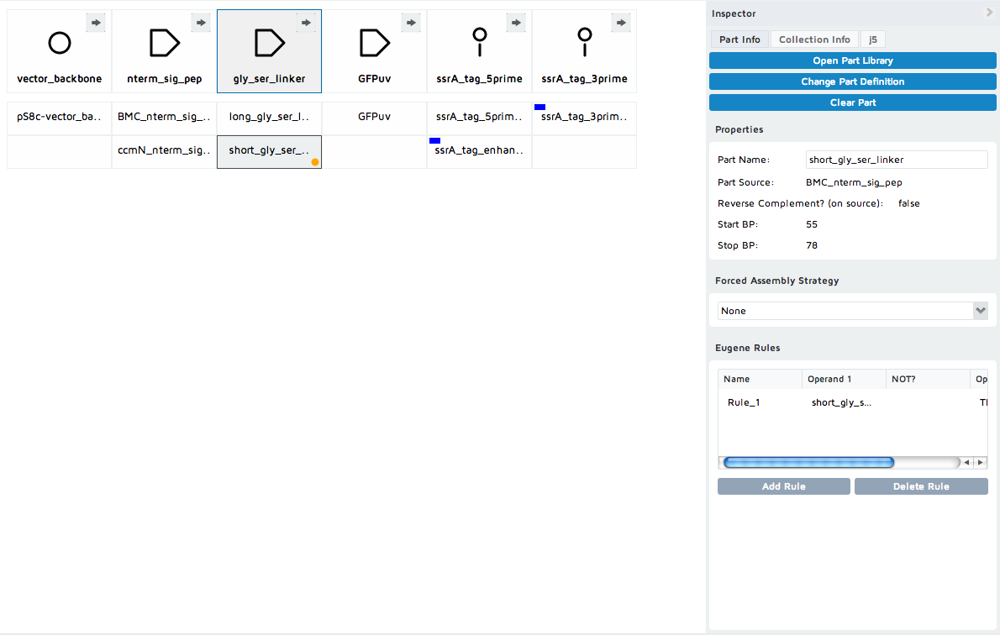

DeviceEditor design files are based upon XML, and contain all of the information required to fully recapitulate designs on the DeviceEditor canvas. Third-party bioCAD tools can output DeviceEditor design files for integration with DeviceEditor and thereby j5 DNA assembly design automation.
Here is the XML schema for DeviceEditor format design files: design.xsd
Here is an example DeviceEditor design: DeviceEditor_example.xml

Several key aspects of this example design to highlight are:
Here is the stylized DeviceEditor design file for the above example:
<?xml version="1.0" encoding="UTF-8"?>
<de:design xsi:schemaLocation="http://jbei.org/device_editor design.xsd" xmlns:de="http://jbei.org/device_editor" xmlns:xsi="http://www.w3.org/2001/XMLSchema-instance">
<de:version>4.1</de:version>
<de:sequenceFiles>
<de:sequenceFile hash="23d714d34632e24f53c2095f05e79f17aded7ec22651c20e4b320f82bc2bf731">
<de:format>Genbank</de:format>
<de:content><![CDATA[LOCUS pj5_00001 5299 bp dna circular UNK 26-OCT-2009
DEFINITION promoter seq from pBAD33.
ACCESSION unknown
KEYWORDS ; ; ; ; ; ; ; ; ; ; ; ; ; ; ; ; ; ; ; .
FEATURES Location/Qualifiers
CDS complement(7..885)
/label=araC
protein_bind 914..931
/label=operator\O2
promoter complement(1036..1064)
/label=araC\promoter
protein_bind 1072..1093
/label=operator\O1
misc_binding 1115..1128
/label=CAP\site
protein_bind 1124..1162
/label=Operator\I2\and\I1
promoter 1161..1188
/label=pBAD\promoter
RBS 1216..1235
/label=RBS
CDS 1236..2018
/vntifkey="4"
/label=GFPuv
misc_feature 1661..1661
/label=XhoI_silent_mutation
misc_feature 1760..1760
/label=BamHI_silent_mutation
CDS 1953..2015
/vntifkey="4"
/label=signal_peptide
terminator 2034..2162
/label=dbl\term
rep_origin complement(2164..4392)
/label=pSC101**
terminator 4393..4498
/label=T0
misc_marker complement(4514..5173)
/label=CmR
ORIGIN
1 gacgtcttat gacaacttga cggctacatc attcactttt tcttcacaac cggcacggaa
61 ctcgctcggg ctggccccgg tgcatttttt aaatacccgc gagaaataga gttgatcgtc
121 aaaaccaaca ttgcgaccga cggtggcgat aggcatccgg gtggtgctca aaagcagctt
181 cgcctggctg atacgttggt cctcgcgcca gcttaagacg ctaatcccta actgctggcg
241 gaaaagatgt gacagacgcg acggcgacaa gcaaacatgc tgtgcgacgc tggcgatatc
301 aaaattgctg tctgccaggt gatcgctgat gtactgacaa gcctcgcgta cccgattatc
361 catcggtgga tggagcgact cgttaatcgc ttccatgcgc cgcagtaaca attgctcaag
421 cagatttatc gccagcagct ccgaatagcg cccttcccct tgcccggcgt taatgatttg
481 cccaaacagg tcgctgaaat gcggctggtg cgcttcatcc gggcgaaaga accccgtatt
541 ggcaaatatt gacggccagt taagccattc atgccagtag gcgcgcggac gaaagtaaac
601 ccactggtga taccattcgc gagcctccgg atgacgaccg tagtgatgaa tctctcctgg
661 cgggaacagc aaaatatcac ccggtcggca aacaaattct cgtccctgat ttttcaccac
721 cccctgaccg cgaatggtga gattgagaat ataacctttc attcccagcg gtcggtcgat
781 aaaaaaatcg agataaccgt tggcctcaat cggcgttaaa cccgccacca gatgggcatt
841 aaacgagtat cccggcagca ggggatcatt ttgcgcttca gccatacttt tcatactccc
901 gccattcaga gaagaaacca attgtccata ttgcatcaga cattgccgtc actgcgtctt
961 ttactggctc ttctcgctaa ccaaaccggt aaccccgctt attaaaagca ttctgtaaca
1021 aagcgggacc aaagccatga caaaaacgcg taacaaaagt gtctataatc acggcagaaa
1081 agtccacatt gattatttgc acggcgtcac actttgctat gccatagcat ttttatccat
1141 aagattagcg gattctacct gacgcttttt atcgcaactc tctactgttt ctccataccc
1201 gtttttttgg gaatttttaa gaaggagata tacatatgag taaaggagaa gaacttttca
1261 ctggagttgt cccaattctt gttgaattag atggtgatgt taatgggcac aaattttctg
1321 tcagtggaga gggtgaaggt gatgcaacat acggaaaact tacccttaaa tttatttgca
1381 ctactggaaa actacctgtt ccatggccaa cacttgtcac tactttctct tatggtgttc
1441 aatgcttttc ccgttatccg gatcatatga aacggcatga ctttttcaag agtgccatgc
1501 ccgaaggtta tgtacaggaa cgcactatat ctttcaaaga tgacgggaac tacaagacgc
1561 gtgctgaagt caagtttgaa ggtgataccc ttgttaatcg tatcgagtta aaaggtattg
1621 attttaaaga agatggaaac attctcggac acaaactcga atacaactat aactcacaca
1681 atgtatacat cacggcagac aaacaaaaga atggaatcaa agctaacttc aaaattcgcc
1741 acaacattga agatggatct gttcaactag cagaccatta tcaacaaaat actccaattg
1801 gcgatggccc tgtcctttta ccagacaacc attacctgtc gacacaatct gccctttcga
1861 aagatcccaa cgaaaagcgt gaccacatgg tccttcttga gtttgtaact gctgctggga
1921 ttacacatgg catggatgag ctcggcggcg gcggcagcaa ggtctacggc aaggaacagt
1981 ttttgcggat gcgccagagc atgttccccg atcgctaaat cgagtaagga tctccaggca
2041 tcaaataaaa cgaaaggctc agtcgaaaga ctgggccttt cgttttatct gttgtttgtc
2101 ggtgaacgct ctctactaga gtcacactgg ctcaccttcg ggtgggcctt tctgcgttta
2161 tacctagggt acgggttttg ctgcccgcaa acgggctgtt ctggtgttgc tagtttgtta
2221 tcagaatcgc agatccggct tcagccggtt tgccggctga aagcgctatt tcttccagaa
2281 ttgccatgat tttttcccca cgggaggcgt cactggctcc cgtgttgtcg gcagctttga
2341 ttcgataagc agcatcgcct gtttcaggct gtctatgtgt gactgttgag ctgtaacaag
2401 ttgtctcagg tgttcaattt catgttctag ttgctttgtt ttactggttt cacctgttct
2461 attaggtgtt acatgctgtt catctgttac attgtcgatc tgttcatggt gaacagcttt
2521 gaatgcacca aaaactcgta aaagctctga tgtatctatc ttttttacac cgttttcatc
2581 tgtgcatatg gacagttttc cctttgatat gtaacggtga acagttgttc tacttttgtt
2641 tgttagtctt gatgcttcac tgatagatac aagagccata agaacctcag atccttccgt
2701 atttagccag tatgttctct agtgtggttc gttgtttttg cgtgagccat gagaacgaac
2761 cattgagatc atacttactt tgcatgtcac tcaaaaattt tgcctcaaaa ctggtgagct
2821 gaatttttgc agttaaagca tcgtgtagtg tttttcttag tccgttatgt aggtaggaat
2881 ctgatgtaat ggttgttggt attttgtcac cattcatttt tatctggttg ttctcaagtt
2941 cggttacgag atccatttgt ctatctagtt caacttggaa aatcaacgta tcagtcgggc
3001 ggcctcgctt atcaaccacc aatttcatat tgctgtaagt gtttaaatct ttacttattg
3061 gtttcaaaac ccattggtta agccttttaa actcatggta gttattttca agcattaaca
3121 tgaacttaaa ttcatcaagg ctaatctcta tatttgcctt gtgagttttc ttttgtgtta
3181 gttcttttaa taaccactca taaatcctca tagagtattt gttttcaaaa gacttaacat
3241 gttccagatt atattttatg aattttttta actggaaaag ataaggcaat atctcttcac
3301 taaaaactaa ttctaatttt tcgcttgaga acttggcata gtttgtccac tggaaaatct
3361 caaagccttt aaccaaagga ttcctgattt ccacagttct cgtcatcagc tctctggttg
3421 ctttagctaa tacaccataa gcattttccc tactgatgtt catcatctga gcgtattggt
3481 tataagtgaa cgataccgtc cgttctttcc ttgtagggtt ttcaatcgtg gggttgagta
3541 gtgccacaca gcataaaatt agcttggttt catgctccgt taagtcatag cgactaatcg
3601 ctagttcatt tgctttgaaa acaactaatt cagacataca tctcaattgg tctaggtgat
3661 tttaatcact ataccaattg agatgggcta gtcaatgata attactagtc cttttcccgg
3721 gtgatctggg tatctgtaaa ttctgctaga cctttgctgg aaaacttgta aattctgcta
3781 gaccctctgt aaattccgct agacctttgt gtgttttttt tgtttatatt caagtggtta
3841 taatttatag aataaagaaa gaataaaaaa agataaaaag aatagatccc agccctgtgt
3901 ataactcact actttagtca gttccgcagt attacaaaag gatgtcgcaa acgctgtttg
3961 ctcctctaca aaacagacct taaaacccta aaggcttaag tagcaccctc gcaagctcgg
4021 gcaaatcgct gaatattcct tttgtctccg accatcaggc acctgagtcg ctgtcttttt
4081 cgtgacattc agttcgctgc gctcacggct ctggcagtga atgggggtaa atggcactac
4141 aggcgccttt tatggattca tgcaaggaaa ctacccataa tacaagaaaa gcccgtcacg
4201 ggcttctcag ggcgttttat ggcgggtctg ctatgtggtg ctatctgact ttttgctgtt
4261 cagcagttcc tgccctctga ttttccagtc tgaccacttc ggattatccc gtgacaggtc
4321 attcagactg gctaatgcac ccagtaaggc agcggtatca tcaacaggct tacccgtctt
4381 actgtcccta gtgcttggat tctcaccaat aaaaaacgcc cggcggcaac cgagcgttct
4441 gaacaaatcc agatggagtt ctgaggtcat tactggatct atcaacagga gtccaagcga
4501 gctcgatatc aaattacgcc ccgccctgcc actcatcgca gtactgttgt aattcattaa
4561 gcattctgcc gacatggaag ccatcacaaa cggcatgatg aacctgaatc gccagcggca
4621 tcagcacctt gtcgccttgc gtataatatt tgcccatggt gaaaacgggg gcgaagaagt
4681 tgtccatatt ggccacgttt aaatcaaaac tggtgaaact cacccaggga ttggctgaga
4741 cgaaaaacat attctcaata aaccctttag ggaaataggc caggttttca ccgtaacacg
4801 ccacatcttg cgaatatatg tgtagaaact gccggaaatc gtcgtggtat tcactccaga
4861 gcgatgaaaa cgtttcagtt tgctcatgga aaacggtgta acaagggtga acactatccc
4921 atatcaccag ctcaccgtct ttcattgcca tacgaaattc cggatgagca ttcatcaggc
4981 gggcaagaat gtgaataaag gccggataaa acttgtgctt atttttcttt acggtcttta
5041 aaaaggccgt aatatccagc tgaacggtct ggttataggt acattgagca actgactgaa
5101 atgcctcaaa atgttcttta cgatgccatt gggatatatc aacggtggta tatccagtga
5161 tttttttctc cattttagct tccttagctc ctgaaaatct cgataactca aaaaatacgc
5221 ccggtagtga tcttatttca ttatggtgaa agttggaacc tcttacgtgc cgatcaacgt
5281 ctcattttcg ccagatatc
//
]]></de:content>
<de:fileName>pj5_00001.gb</de:fileName>
</de:sequenceFile>
<de:sequenceFile hash="46d943915b196da710b25db3127c75a1ba01da913d0b5bb2b17055f9b5a079a1">
<de:format>Genbank</de:format>
<de:content><![CDATA[LOCUS BMC_nterm_sig_pe 102 bp DNA linear 26-FEB-2010
DEFINITION promoter seq from pBAD33.
ACCESSION unknown
SOURCE
ORGANISM
FEATURES Location/Qualifiers
misc_feature 55..102
/label=gly_ser_linker
CDS 1..102
/label=GFPuv
misc_feature 4..54
/label=Clostridium_BMC_sig_pep
BASE COUNT 33 a 14 c 29 g 26 t
ORIGIN
1 atggaaaata acgctttatt agaacaaata atcaatgaag ttttaaaaaa tatgggtggc
61 agtggtagcg ggagctcggg tggctcaggc tctggttcca gt
//
]]></de:content>
<de:fileName>BMC_nterm_sig_pep_GFPuv.gb</de:fileName>
</de:sequenceFile>
<de:sequenceFile hash="fbdc0cd5591545b773bce0741569577663dd940ca88bfd3b3dca98a3fc20fc39">
<de:format>Genbank</de:format>
<de:content><![CDATA[LOCUS ccmN_nterm_sig_p 108 bp DNA linear 26-FEB-2010
DEFINITION promoter seq from pBAD33.
ACCESSION unknown
SOURCE
ORGANISM
FEATURES Location/Qualifiers
misc_feature 4..60
/label=ccmN_sig_pep
misc_feature 61..108
/label=gly_ser_linker
CDS 1..108
/label=GFPuv
BASE COUNT 20 a 25 c 40 g 23 t
ORIGIN
1 atgaaggtct acggcaagga acagtttttg cggatgcgcc agagcatgtt ccccgatcgc
61 ggtggcagtg gtagcgggag ctcgggtggc tcaggctctg gttccagt
//
]]></de:content>
<de:fileName>ccmN_nterm_sig_pep_GFPuv.gb</de:fileName>
</de:sequenceFile>
<de:sequenceFile hash="7ded0adb8463aa8b7bfe30d093bc4f6d8718bd1182906f283b04d303860dd0f3">
<de:format>FASTA</de:format>
<de:content><![CDATA[>ssrA_tag_enhance
GCGGCGAACGATGAAAACTATAACTATGCGCTGGCGGCG
]]></de:content>
<de:fileName>ssrA_tag_enhance.fas</de:fileName>
</de:sequenceFile>
<de:sequenceFile hash="fbb4e8715b6352478db1561d7229d0ef46ff83412c188fd71352a1418ddb43ab">
<de:format>jbei-seq</de:format>
<de:content><![CDATA[<?xml version="1.0" encoding="UTF-8"?>
<seq:seq
xmlns:seq="http://jbei.org/sequence"
xmlns:xsi="http://www.w3.org/2001/XMLSchema-instance"
xsi:schemaLocation="http://jbei.org/sequence seq.xsd"
>
<seq:name>ssrA_tag_GFPuv</seq:name>
<seq:circular>false</seq:circular>
<seq:sequence>gcggcgaacgatgaaaactatgcgctggcggcg</seq:sequence>
<seq:features>
<seq:feature>
<seq:label>ssrA tag</seq:label>
<seq:complement>false</seq:complement>
<seq:type>misc_feature</seq:type>
<seq:location>
<seq:genbankStart>1</seq:genbankStart>
<seq:end>33</seq:end>
</seq:location>
<seq:attribute name="vntifkey" quoted="true" >21</seq:attribute>
<seq:seqHash>0d5535e13cc9708d0ff0289af2fae27e564b6bcbcd9242f5140d96957744a517</seq:seqHash>
</seq:feature>
<seq:feature>
<seq:label>GFPuv</seq:label>
<seq:complement>false</seq:complement>
<seq:type>CDS</seq:type>
<seq:location>
<seq:genbankStart>1</seq:genbankStart>
<seq:end>33</seq:end>
</seq:location>
<seq:attribute name="vntifkey" quoted="true" >4</seq:attribute>
<seq:seqHash>0d5535e13cc9708d0ff0289af2fae27e564b6bcbcd9242f5140d96957744a517</seq:seqHash>
</seq:feature>
</seq:features>
</seq:seq>
]]></de:content>
<de:fileName>ssrA_tag_GFPuv.xml</de:fileName>
</de:sequenceFile>
</de:sequenceFiles>
<de:partVOs>
<de:partVO id="1318886361742366">
<de:name>pS8c-vector_backbone</de:name>
<de:revComp>false</de:revComp>
<de:startBP>2016</de:startBP>
<de:stopBP>1238</de:stopBP>
<de:sequenceFileHash>23d714d34632e24f53c2095f05e79f17aded7ec22651c20e4b320f82bc2bf731</de:sequenceFileHash>
<de:parts>
<de:part id="1318886361742634">
<de:fas/>
</de:part>
</de:parts>
</de:partVO>
<de:partVO id="1318886361747742">
<de:name>BMC_nterm_sig_pep</de:name>
<de:revComp>false</de:revComp>
<de:startBP>4</de:startBP>
<de:stopBP>54</de:stopBP>
<de:sequenceFileHash>46d943915b196da710b25db3127c75a1ba01da913d0b5bb2b17055f9b5a079a1</de:sequenceFileHash>
<de:parts>
<de:part id="1318886361747000">
<de:fas/>
</de:part>
</de:parts>
</de:partVO>
<de:partVO id="1318886361752995">
<de:name>ccmN_nterm_sig_pep</de:name>
<de:revComp>false</de:revComp>
<de:startBP>4</de:startBP>
<de:stopBP>60</de:stopBP>
<de:sequenceFileHash>fbdc0cd5591545b773bce0741569577663dd940ca88bfd3b3dca98a3fc20fc39</de:sequenceFileHash>
<de:parts>
<de:part id="1318886361752939">
<de:fas/>
</de:part>
</de:parts>
</de:partVO>
<de:partVO id="1318886361759464">
<de:name>long_gly_ser_linker</de:name>
<de:revComp>false</de:revComp>
<de:startBP>55</de:startBP>
<de:stopBP>102</de:stopBP>
<de:sequenceFileHash>46d943915b196da710b25db3127c75a1ba01da913d0b5bb2b17055f9b5a079a1</de:sequenceFileHash>
<de:parts>
<de:part id="1318886361759096">
<de:fas/>
</de:part>
</de:parts>
</de:partVO>
<de:partVO id="1318886361765194">
<de:name>short_gly_ser_linker</de:name>
<de:revComp>false</de:revComp>
<de:startBP>55</de:startBP>
<de:stopBP>78</de:stopBP>
<de:sequenceFileHash>46d943915b196da710b25db3127c75a1ba01da913d0b5bb2b17055f9b5a079a1</de:sequenceFileHash>
<de:parts>
<de:part id="1318886361765102">
<de:fas/>
</de:part>
</de:parts>
</de:partVO>
<de:partVO id="1318886361772274">
<de:name>GFPuv</de:name>
<de:revComp>false</de:revComp>
<de:startBP>1242</de:startBP>
<de:stopBP>1952</de:stopBP>
<de:sequenceFileHash>23d714d34632e24f53c2095f05e79f17aded7ec22651c20e4b320f82bc2bf731</de:sequenceFileHash>
<de:parts>
<de:part id="1318886361772744">
<de:fas/>
</de:part>
</de:parts>
</de:partVO>
<de:partVO id="1320793316351870">
<de:name>ssrA_tag_5prime</de:name>
<de:revComp>false</de:revComp>
<de:startBP>1</de:startBP>
<de:stopBP>15</de:stopBP>
<de:sequenceFileHash>fbb4e8715b6352478db1561d7229d0ef46ff83412c188fd71352a1418ddb43ab</de:sequenceFileHash>
<de:parts>
<de:part id="1320793316351783">
<de:fas/>
</de:part>
</de:parts>
</de:partVO>
<de:partVO id="1320793317318921">
<de:name>ssrA_tag_enhanced_5prime</de:name>
<de:revComp>false</de:revComp>
<de:startBP>1</de:startBP>
<de:stopBP>21</de:stopBP>
<de:sequenceFileHash>7ded0adb8463aa8b7bfe30d093bc4f6d8718bd1182906f283b04d303860dd0f3</de:sequenceFileHash>
<de:parts>
<de:part id="1320793317318572">
<de:fas>Embed_in_primer_reverse</de:fas>
</de:part>
</de:parts>
</de:partVO>
<de:partVO id="1320793489598076">
<de:name>ssrA_tag_3prime</de:name>
<de:revComp>false</de:revComp>
<de:startBP>16</de:startBP>
<de:stopBP>33</de:stopBP>
<de:sequenceFileHash>fbb4e8715b6352478db1561d7229d0ef46ff83412c188fd71352a1418ddb43ab</de:sequenceFileHash>
<de:parts>
<de:part id="1320793489598961">
<de:fas>Embed_in_primer_forward</de:fas>
</de:part>
</de:parts>
</de:partVO>
</de:partVOs>
<de:eugeneRules>
<de:eugeneRule>
<de:name>Rule_1</de:name>
<de:negationOperator>false</de:negationOperator>
<de:operand1ID>1318886361765194</de:operand1ID>
<de:compositionalOperator>THEN</de:compositionalOperator>
<de:operand2ID>1318886361747742</de:operand2ID>
</de:eugeneRule>
</de:eugeneRules>
<de:j5Collection>
<de:isCircular>true</de:isCircular>
<de:j5Bins>
<de:j5Bin>
<de:binName>vector_backbone</de:binName>
<de:iconID>origin-of-replication</de:iconID>
<de:direction>forward</de:direction>
<de:dsf>false</de:dsf>
<de:fro>2</de:fro>
<de:binItems>
<de:partID>1318886361742634</de:partID>
</de:binItems>
</de:j5Bin>
<de:j5Bin>
<de:binName>nterm_sig_pep</de:binName>
<de:iconID>cds</de:iconID>
<de:direction>forward</de:direction>
<de:dsf>true</de:dsf>
<de:binItems>
<de:partID>1318886361747000</de:partID>
<de:partID>1318886361752939</de:partID>
</de:binItems>
</de:j5Bin>
<de:j5Bin>
<de:binName>gly_ser_linker</de:binName>
<de:iconID>cds</de:iconID>
<de:direction>forward</de:direction>
<de:dsf>false</de:dsf>
<de:binItems>
<de:partID>1318886361759096</de:partID>
<de:partID>1318886361765102</de:partID>
</de:binItems>
</de:j5Bin>
<de:j5Bin>
<de:binName>GFPuv</de:binName>
<de:iconID>cds</de:iconID>
<de:direction>forward</de:direction>
<de:dsf>false</de:dsf>
<de:binItems>
<de:partID>1318886361772744</de:partID>
</de:binItems>
</de:j5Bin>
<de:j5Bin>
<de:binName>ssrA_tag_5prime</de:binName>
<de:iconID>protein-stability-element</de:iconID>
<de:direction>forward</de:direction>
<de:dsf>true</de:dsf>
<de:binItems>
<de:partID>1320793316351783</de:partID>
<de:partID>1320793317318572</de:partID>
</de:binItems>
</de:j5Bin>
<de:j5Bin>
<de:binName>ssrA_tag_3prime</de:binName>
<de:iconID>protein-stability-element</de:iconID>
<de:direction>forward</de:direction>
<de:dsf>false</de:dsf>
<de:binItems>
<de:partID>1320793489598961</de:partID>
</de:binItems>
</de:j5Bin>
</de:j5Bins>
</de:j5Collection>
</de:design>
Here is the XML schema for the DeviceEditor design file format:
<?xml version="1.0" encoding="UTF-8"?>
<xs:schema xmlns:xs="http://www.w3.org/2001/XMLSchema"
targetNamespace="http://jbei.org/device_editor"
xmlns:de="http://jbei.org/device_editor"
elementFormDefault="qualified">
<xs:element name="design">
<xs:complexType>
<xs:sequence>
<xs:element ref="de:version" />
<xs:element ref="de:sequenceFiles" />
<xs:element ref="de:partVOs" />
<xs:element ref="de:eugeneRules" />
<xs:element ref="de:j5Collection"/>
</xs:sequence>
</xs:complexType>
</xs:element>
<xs:element name="version">
<xs:simpleType>
<xs:restriction base="xs:string">
<xs:pattern value="4.1" />
</xs:restriction>
</xs:simpleType>
</xs:element>
<xs:element name="sequenceFiles">
<xs:complexType>
<xs:sequence>
<xs:element ref="de:sequenceFile" minOccurs="0" maxOccurs="unbounded"/>
</xs:sequence>
</xs:complexType>
</xs:element>
<xs:element name="sequenceFile">
<xs:complexType>
<xs:sequence>
<xs:element ref="de:format" />
<xs:element ref="de:content" />
<xs:element ref="de:fileName" />
</xs:sequence>
<xs:attribute name="hash" type="xs:string" />
</xs:complexType>
</xs:element>
<xs:element name="format">
<xs:simpleType>
<xs:restriction base="xs:string">
<xs:enumeration value="Genbank" />
<xs:enumeration value="FASTA" />
<xs:enumeration value="jbei-seq" />
</xs:restriction>
</xs:simpleType>
</xs:element>
<xs:element name="content" type="xs:string" />
<xs:element name="fileName" type="xs:string" />
<xs:element name="partVOs">
<xs:complexType>
<xs:sequence>
<xs:element ref="de:partVO" minOccurs="0" maxOccurs="unbounded" />
</xs:sequence>
</xs:complexType>
</xs:element>
<xs:element name="partVO">
<xs:complexType>
<xs:sequence>
<xs:element ref="de:name" />
<xs:group ref="de:seqInfo" minOccurs="0" />
<xs:element ref="de:parts" />
</xs:sequence>
<xs:attribute name="id" type="xs:string" />
</xs:complexType>
</xs:element>
<xs:element name="name" type="xs:string" />
<xs:group name="seqInfo">
<xs:sequence>
<xs:element ref="de:revComp" />
<xs:element ref="de:startBP" />
<xs:element ref="de:stopBP" />
<xs:element ref="de:sequenceFileHash" />
</xs:sequence>
</xs:group>
<xs:element name="revComp" type="xs:boolean" />
<xs:element name="startBP" type="xs:positiveInteger" />
<xs:element name="stopBP" type="xs:positiveInteger" />
<xs:element name="sequenceFileHash" type="xs:string" />
<xs:element name="parts">
<xs:complexType>
<xs:sequence>
<xs:element ref="de:part" maxOccurs="unbounded" />
</xs:sequence>
</xs:complexType>
</xs:element>
<xs:element name="part">
<xs:complexType>
<xs:sequence>
<xs:element ref="de:fas" />
</xs:sequence>
<xs:attribute name="id" type="xs:string" />
</xs:complexType>
</xs:element>
<xs:element name="fas">
<xs:simpleType>
<xs:restriction base="xs:string">
<xs:enumeration value="" />
<xs:enumeration value="DIGEST" />
<xs:enumeration value="Direct Synthesis" />
<xs:enumeration value="PCR" />
<xs:enumeration value="Embed_in_primer_reverse" />
<xs:enumeration value="Embed_in_primer_forward" />
<xs:enumeration value="Annealed Oligos"></xs:enumeration>
</xs:restriction>
</xs:simpleType>
</xs:element>
<xs:element name="eugeneRules">
<xs:complexType>
<xs:sequence>
<xs:element ref="de:eugeneRule" minOccurs="0" maxOccurs="unbounded" />
</xs:sequence>
</xs:complexType>
</xs:element>
<xs:element name="eugeneRule">
<xs:complexType>
<xs:sequence>
<xs:element ref="de:name" />
<xs:element ref="de:negationOperator" />
<xs:element ref="de:operand1ID" />
<xs:element ref="de:compositionalOperator" />
<xs:group ref="de:operand2" />
</xs:sequence>
</xs:complexType>
</xs:element>
<xs:element name="negationOperator" type="xs:boolean" />
<xs:element name="operand1ID" type="xs:string" />
<xs:element name="compositionalOperator">
<xs:simpleType>
<xs:restriction base="xs:string">
<xs:enumeration value="AFTER" />
<xs:enumeration value="BEFORE" />
<xs:enumeration value="WITH" />
<xs:enumeration value="THEN" />
<xs:enumeration value="NEXTTO" />
<xs:enumeration value="MORETHAN" />
</xs:restriction>
</xs:simpleType>
</xs:element>
<xs:group name="operand2">
<xs:choice>
<xs:element ref="de:operand2ID" />
<xs:element ref="de:operand2Number" />
</xs:choice>
</xs:group>
<xs:element name="operand2ID" type="xs:string" />
<xs:element name="operand2Number" type="xs:nonNegativeInteger" />
<xs:element name="j5Collection">
<xs:complexType>
<xs:sequence>
<xs:element ref="de:isCircular" />
<xs:element ref="de:j5Bins" />
</xs:sequence>
</xs:complexType>
</xs:element>
<xs:element name="isCircular" type="xs:boolean" />
<xs:element name="j5Bins">
<xs:complexType>
<xs:sequence>
<xs:element ref="de:j5Bin" maxOccurs="unbounded"/>
</xs:sequence>
</xs:complexType>
</xs:element>
<xs:element name="j5Bin">
<xs:complexType>
<xs:sequence>
<xs:element ref="de:binName" />
<xs:element ref="de:iconID" />
<xs:element ref="de:direction" />
<xs:element ref="de:dsf" />
<xs:element ref="de:fro" minOccurs="0" />
<xs:element ref="de:extra5PrimeBps" minOccurs="0" />
<xs:element ref="de:extra3PrimeBps" minOccurs="0" />
<xs:element ref="de:binItems" />
</xs:sequence>
</xs:complexType>
</xs:element>
<xs:element name="binName" type="xs:string" />
<xs:element name="iconID">
<xs:simpleType>
<xs:restriction base="xs:string">
<xs:enumeration value="assembly-scar" />
<xs:enumeration value="blunt-restriction-site" />
<xs:enumeration value="cds" />
<xs:enumeration value="five-prime-overhang" />
<xs:enumeration value="five-prime-sticky-restriction-site" />
<xs:enumeration value="insulator" />
<xs:enumeration value="operator" />
<xs:enumeration value="origin-of-replication" />
<xs:enumeration value="primer-binding-site" />
<xs:enumeration value="promoter" />
<xs:enumeration value="protease-site" />
<xs:enumeration value="protein-stability-element" />
<xs:enumeration value="restriction-enzyme-recognition-site" />
<xs:enumeration value="ribonuclease-site" />
<xs:enumeration value="ribosome-entry-site" />
<xs:enumeration value="rna-stability-element" />
<xs:enumeration value="signature" />
<xs:enumeration value="terminator" />
<xs:enumeration value="three-prime-overhang" />
<xs:enumeration value="three-prime-sticky-restriction-site" />
<xs:enumeration value="user-defined" />
</xs:restriction>
</xs:simpleType>
</xs:element>
<xs:element name="direction">
<xs:simpleType>
<xs:restriction base="xs:string">
<xs:enumeration value="forward" />
<xs:enumeration value="reverse" />
</xs:restriction>
</xs:simpleType>
</xs:element>
<xs:element name="dsf" type="xs:boolean" />
<xs:element name="fro" type="xs:int" />
<xs:element name="extra5PrimeBps" type="xs:int" />
<xs:element name="extra3PrimeBps" type="xs:int" />
<xs:element name="binItems">
<xs:complexType>
<xs:sequence>
<xs:element ref="de:partID" minOccurs="0" maxOccurs="unbounded" />
</xs:sequence>
</xs:complexType>
</xs:element>
<xs:element name="partID" type="xs:string" />
</xs:schema>